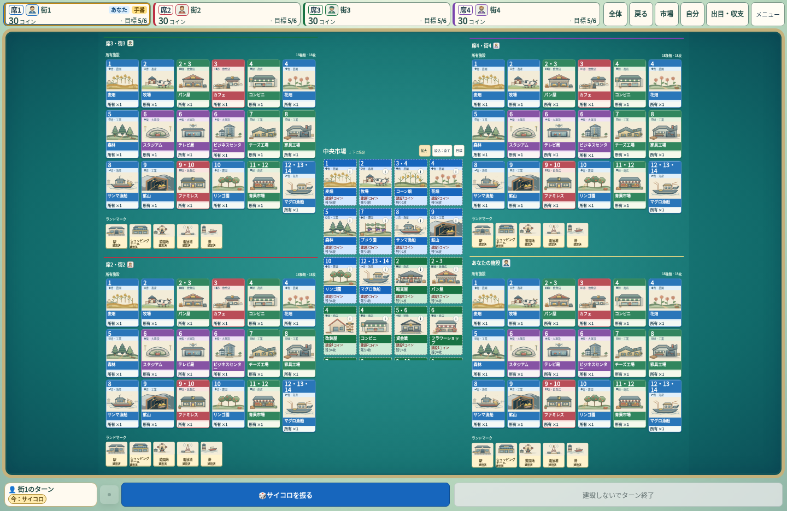

製品コード3b6d2353。比較観点：所有カードと市場の存在感、アート・色・出目・枚数、HUDの占有、誰の場か、空白、操作の分かりやすさ。解像度・画面比・撮影状態が異なるため、同一倍率・同一対局の比較ではない。静止画だけで演出時間、音、商用品質の完全な同等性を証明しない。
最新版の自然UI対局の中盤 ／ 最新版の自然UI対局の終盤 ／ 出目確定と施設発動 ／ 旧fe版4人CPU対局の終盤 ／ 監査・限界